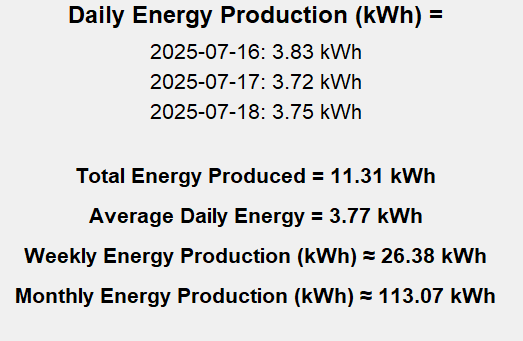

PVCalc is a Python-based application that estimates solar energy production using weather forecasts and physical models from pvlib. With an interactive GUI and rich features, it’s a practical tool for solar planning or research.
✨ Features
- Weather data integration for global locations
- Solar irradiance modeling with pvlib
- Dust surface density support for precision
- Graphical user interface built with Tkinter
- Power output visualizations for custom time ranges
⚙️ Installation
Make sure Python 3.8+ is installed. Then run:
git clone https://github.com/spyridouladev/PVCalc.git
cd PVCalc
# (Optional) Create and activate a virtual environment
python -m venv venv
source venv/bin/activate # macOS/Linux
venv\Scripts\activate.bat # Windows CMD
# Install dependencies
pip install -r requirements.txt
# Run the app
python main.py
🧪 Example: 3-Day Power Forecast
📠Fixed Angle Mode

🔄 Single-Axis Tracker Mode
📈 Results & Forecast Output
📚 Attribution & Licensing
This project incorporates models and data from:
Gholami et al. (2023) – Solar Energy
Read paper →
Data sources include:
- SimpleMaps World Cities DB (link)
- CIESIN GPWv4 (link)
Solar modeling by pvlib — BSD 3-Clause License.
🔗 View on GitHub↠Back to Portfolio